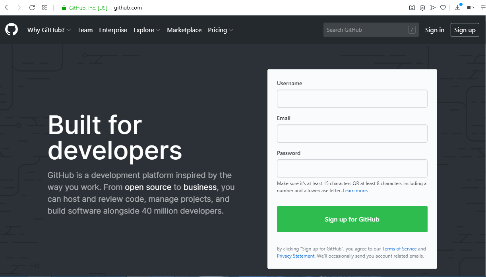

GitHub
Este programa esta desarollado para su utilizacion en aplicacion en el escritorio outline y entorno web online, este permite administrar de una maneraGitHub es una de las herramientas mas utilizadas en el entorno de la programacion debido a que su naturaleza de trabajo compartido permite que el desarrollo sea mucho mas eficiente porque al habilitar opciones mucho mas practicas para la sincronizacion de los cambio ejecutados por Git, ademas cuenta con una opcion de publicar 